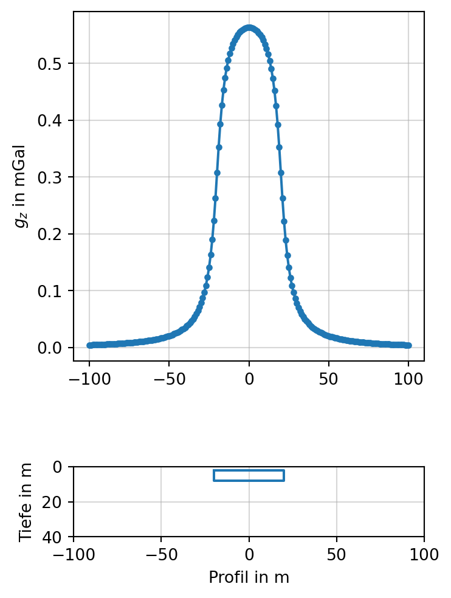
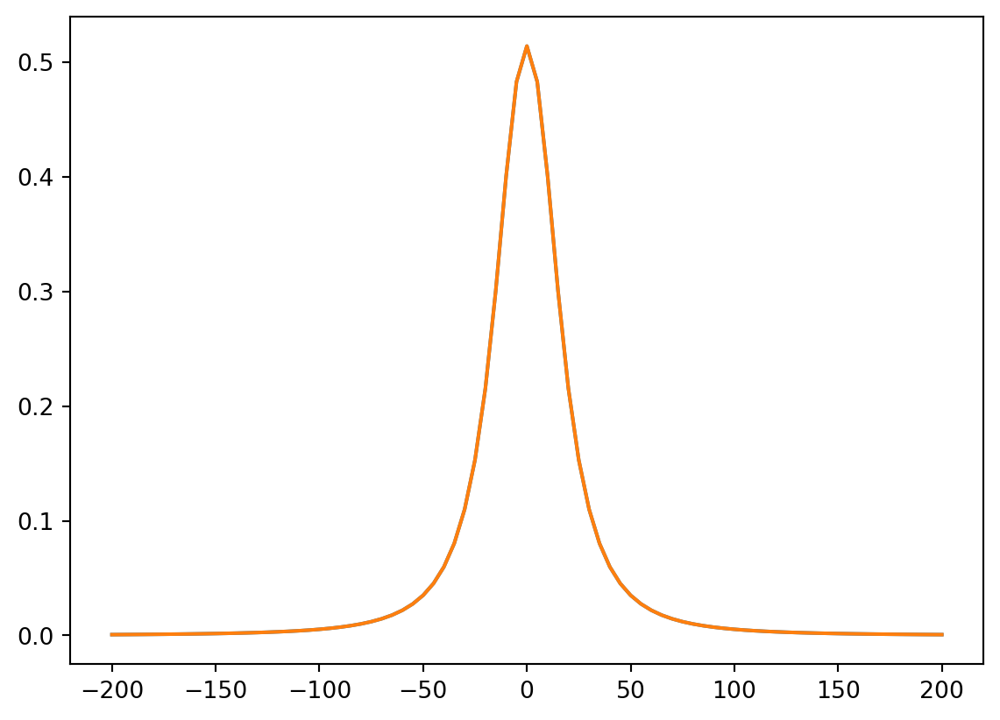

Code anzeigen
import numpy as np
from numpy import isclose
import matplotlib.pyplot as plt
import matplotlib.patches as patches
import xarray as xr
import pygravmag3d as pgmimport numpy as np
from numpy import isclose
import matplotlib.pyplot as plt
import matplotlib.patches as patches
import xarray as xr
import pygravmag3d as pgmnumpy, matplotlib, xarrayGeologische Körper mit ausgedehnter Streichrichtung können als zweidimensionale Dichteverteilung angenommen werden, d.h., \(\rho = \rho(y,z)\). Die Schwerewirkung ist dabei invariant gegenüber einer Verschiebung in \(x\)-Richtung. Das Messprofil verläuft dabei senkrecht zur Streichrichtung, d.h., in \(y\)=Richtnug.
Die gebräuchlichste Methode besteht in der Approximation des vertikalen Störkörperquerschnitts durch ein geschlossenes Polygon.
Beispiel:
Die Python-Klasse Polygon verwaltet die Eckpunkte eines Polygons. Die Reihenfolge der Eckpunkte wird automatisch bestimmt, so dass die Eckpunote im umgekehrten Uhrzeigersinn durchlaufen werden.
ATOL = 1e-8
RTOL = 1e-8
class Polygon:
def __init__(self, x, z, density):
xc = np.mean(x)
zc = np.mean(z)
angles = np.array([np.arctan2(p[1] - zc, p[0] - xc) for p in zip(x, z)])
ind = np.argsort(angles) # if reverse order is required, flip sign of angles
x = x[ind]
z = z[ind]
x = np.append(x, x[0])
z = np.append(z, z[0])
x[isclose(x, 0.0)] = 0.0
z[isclose(z, 0.0)] = 0.0
self.x = x
self.z = z
self.density = density
self.n = len(x) - 1
def __str__(self):
return f"n: {self.n} \nx:\n {self.x} \nz:\n {self.z} \nDensity:\n {self.density}"
def talwani(obs, polygon):
gz = 0.0
density = polygon.density
x = polygon.x
z = polygon.z
n = polygon.n
xp = obs[0]
zp = obs[1]
for k in range(n):
xv = x[k] - xp
zv = z[k] - zp
xvp1 = x[k+1] - xp
zvp1 = z[k+1] - zp
if np.isclose(xv, 0.0, atol=1e-12):
xv += 0.01
if np.isclose(xvp1, 0.0, atol=1e-12):
xvp1 += 0.01
if np.isclose(zv, 0.0, atol=1e-12):
zv += 0.01
if np.isclose(zvp1, 0.0, atol=1e-12):
zvp1 += 0.01
if np.isclose(xv, xvp1, atol=1e-12):
xvp1 += 0.01
if np.isclose(zv, zvp1, atol=1e-12):
zvp1 += 0.01
a_i = xvp1 + zvp1 * (xvp1 - xv) / (zv - zvp1)
phi_i = np.arctan2(zvp1 - zv, xvp1 - xv)
theta_v = np.arctan2(zv, xv)
theta_vp1 = np.arctan2(zvp1, xvp1)
if theta_v < 0:
theta_v += np.pi
if theta_vp1 < 0:
theta_vp1 += np.pi
Zi = a_i * np.sin(phi_i) * np.cos(phi_i) * (
theta_v - theta_vp1 + np.tan(phi_i) *
np.log(
np.cos(theta_v) * ( np.tan(theta_v) - np.tan(phi_i) ) /
np.cos(theta_vp1) / ( np.tan(theta_vp1) - np.tan(phi_i) )))
gz += Zi
gz = gz * 2 * 6.674e-11 * density
return gzEin horizontales Prisma wird durch die Koordinaten seiner Eckpunkte in einer vertikalen Ebene defininert.
Auf einem Profil \(-100 \lt y \lt 100\) m wird die Schwere berechnet.
prism = np.array([[-20.0, 2.0], [-20.0, 8.0], [20.0, 8.0],
[20.0, 2.0]])
density = 2670.0
poly = Polygon(prism[:, 0], prism[:, 1], density)
profile = np.arange(-100.0, 101.0, 1.0)
gz = np.array([talwani(np.array([v, -0.2]), poly) for v in profile])
fig, (ax1, ax2) = plt.subplots(2, 1, figsize=(4, 6))
ax1.plot(profile, 1e5 * gz, marker='.')
ax1.grid(alpha=0.5)
ax1.set_ylabel(r"$g_{z}$ in mGal")
ax2.plot(poly.x, poly.z)
ax2.set_xlim(profile[0], profile[-1])
ax2.set_ylim(40.0, 0.0)
ax2.set_xlabel("Profil in m")
ax2.set_ylabel("Tiefe in m")
ax2.grid(alpha=0.5)
ax2.set_aspect("equal")
fig.tight_layout()
Explizite Ausdrücke für einfache geometrische Körper. Dienen zur Berechnung der Schwere, d.h., der Vertikalkomponenten der relativen Gravitationsbeschleunigung.
Einfachste aller Störkörperformeln.
Für Kugel in Punkt \((0,0,t), t>0\) beträgt die Schwere
\[ V_{z}(x,y,z) = f \Delta\rho \frac{t-z}{\sqrt{x^2 + y^2 + (z-t)^2}^3} \]
def sphere(X, Y, Z, x0, y0, z0, radius, density):
"""
Calculate the vertical component of gravitational acceleration due to a sphere.
Parameters
----------
X : array_like
X-coordinates of observation points (m)
Y : array_like
Y-coordinates of observation points (m)
Z : float or array_like
Z-coordinates of observation points (m), positive downward
x0 : float
X-coordinate of sphere center (m)
y0 : float
Y-coordinate of sphere center (m)
z0 : float
Z-coordinate of sphere center (m), positive downward
radius : float
Radius of the sphere (m)
density : float
Density of the sphere (kg/m³)
Returns
-------
g_z : array_like
Vertical component of gravitational acceleration (mGal), positive downward
Notes
-----
Uses the point mass approximation for a homogeneous sphere.
The gravitational constant G = 6.67430e-11 m³/(kg·s²) is used.
Output is converted from m/s² to mGal (1 mGal = 10⁻⁵ m/s²).
"""
G = 6.67430e-11 # gravitational constant in m^3 kg^-1 s^-2
r = np.sqrt((X - x0)**2 + (Y - y0)**2 + (Z - z0)**2)
V = (4/3) * np.pi * radius**3
mass = density * V
g_z = G * mass * (z0 - Z) / r**3
return g_z * 1e5Häufig verwendeter Baustein für 3D-Dichtemodelle.
Für Rechteckprisma mit den Begrenzungsflächen \((x_{1}, x_{2})\), \((y_{1},y_{2})\) sowie \((z_{1},z_{2})\) gilt
\[ V_{z}(x,y,z) = f \Delta \rho \sum_{i=1}^{2} \sum_{j=1}^{2} \sum_{k=1}^{2} (-1)^{i+j+k} F(x - x_{i}, y-y_{j}, z-z_{k}) \] mit \[ F(u,v,w) = \mathrm{sign} (uv) \left\{ |u| \ln \frac{(|v| + R_{3})R_{2}}{|u|(|v|+R)} + |v| \ln \frac{(|u| + R_{3})R_{1}}{|v|(|u|+R)} + w \atan \frac{|uv|}{wR} \right\} \] und \[ \begin{align} R_{1}^{2} & =v^{2}+w^{2} \\ R_{2}^{2} & =u^{2}+w^{2} \\ R_{3}^{2} & =u^{2}+v^{2} \\ R^{2} & = u^{2} + v^{2} + w^{2} \end{align}. \]
def gz_prism(x, y, z, prism, rho):
"""
Calculate the vertical gravity component gz (after Nagy 1966)
at point (x, y, z) for a homogeneous rectangular prism.
Parameters
----------
x, y, z : float
Observation point (in m)
prism : tuple
Prism boundaries (x1, x2, y1, y2, z1, z2) in m
(z1 and z2 relative to the same reference level as z)
rho : float
Density contrast (kg/m³)
Returns
-------
gz : float
Vertical gravity component (in mGal)
"""
G = 6.67430e-11
x1, x2, y1, y2, z1, z2 = prism
gz = 0.0
for i, xi in enumerate([x1 - x, x2 - x]):
for j, yj in enumerate([y1 - y, y2 - y]):
for k, zk in enumerate([z1 - z, z2 - z]):
sgn = (-1)**(i + j + k)
r = np.sqrt(xi**2 + yj**2 + zk**2)
# if r == 0:
# continue
gz += sgn * (
xi * np.log(yj + r)
+ yj * np.log(xi + r)
- zk * np.arctan((xi * yj) / (zk * r))
)
return G * rho * gz * 1e5Die allgemeinste Berechnungsmethode in 3D beruht auf der Approximation des Störkörpers durch eine Punktwolke auf seiner Oberfläche. Diese Punkte sind Stützstellen einer Dreieckszerlegung (Triangulation).
Eine Python-Implementierung finden wir hier: pygravmag3d.
Wir testen diese Routine, indem wir mit den oben gewonnenen Schwerewerten für das Prisma vergleichen.
rho = 2700.0
prism = (-20.0, 20.0, -10.0, 10.0, 10.0, 30.0)
vertices = np.array([[-20.0, -10.0, 10.0], [20.0, -10.0, 10.0], [20.0, 10.0, 10.0], [-20., 10.0, 10.0],
[-20.0, -10.0, 30.0], [20.0, -10.0, 30.0], [20.0, 10.0, 30.0], [-20., 10.0, 30.0]])
profile = np.arange(-200.0, 201.0, 5.0)
face, corners, normal, volume = pgm.get_triangulation(vertices)
g = np.zeros(len(profile))
for i, y in enumerate(profile):
xyz = np.array([0, y, 0])
_, _, _, _, _, g[i] = pgm.get_H(face, corners - xyz, normal, [0,0,1], rho)
g_p = [gz_prism(0.0, v, 0.0, prism, rho) for v in profile]
plt.plot(profile, g * 1e5)
plt.plot(profile, g_p)
plt.show()